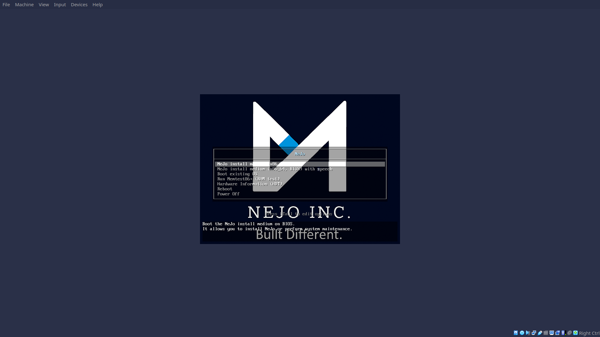
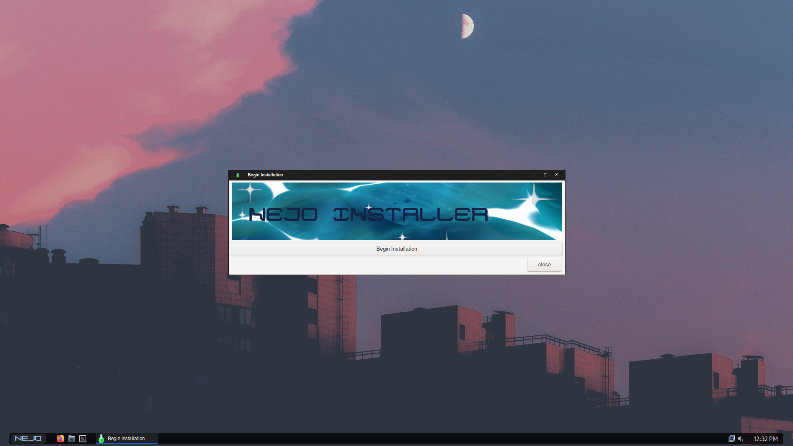
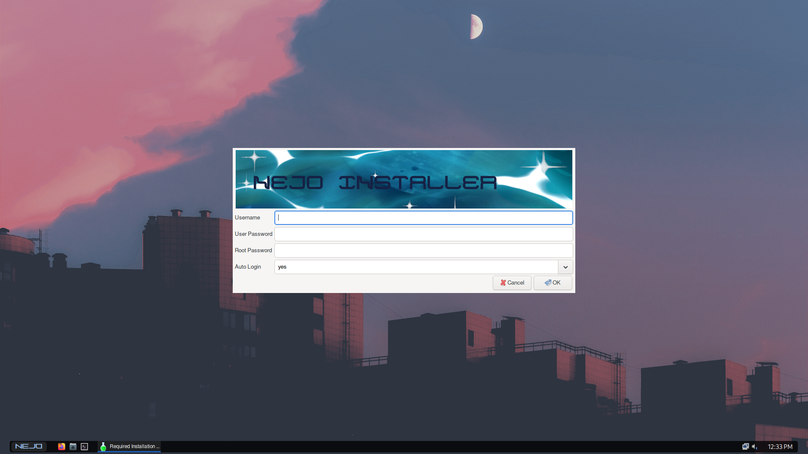
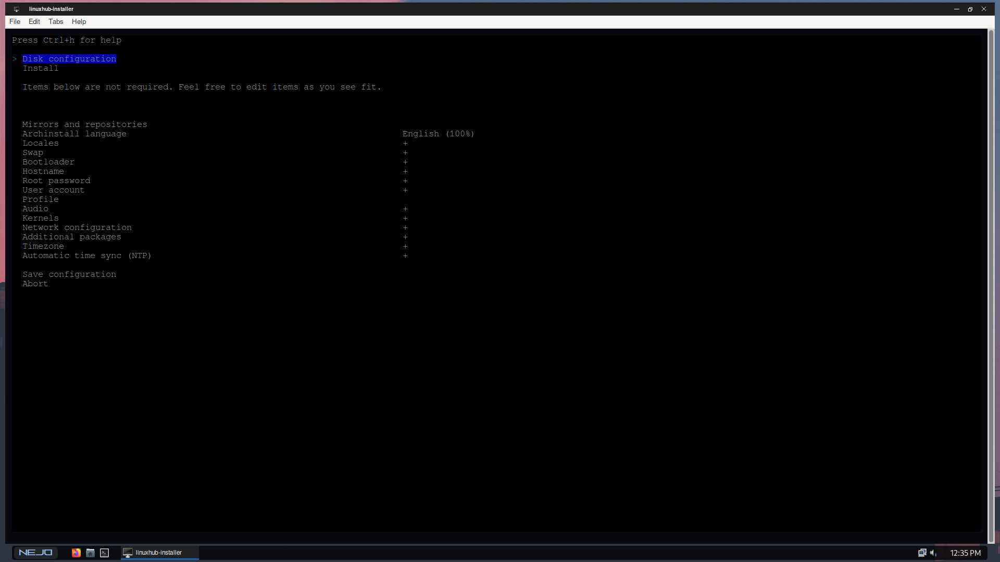
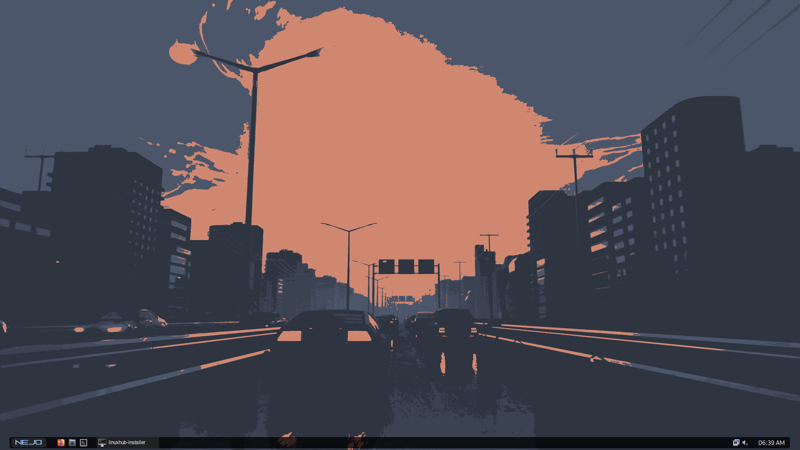
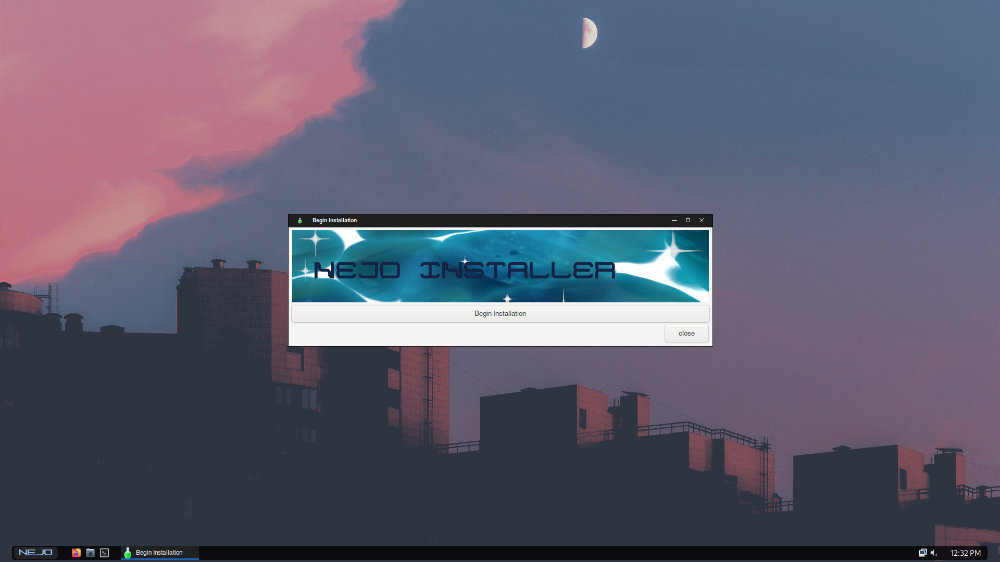
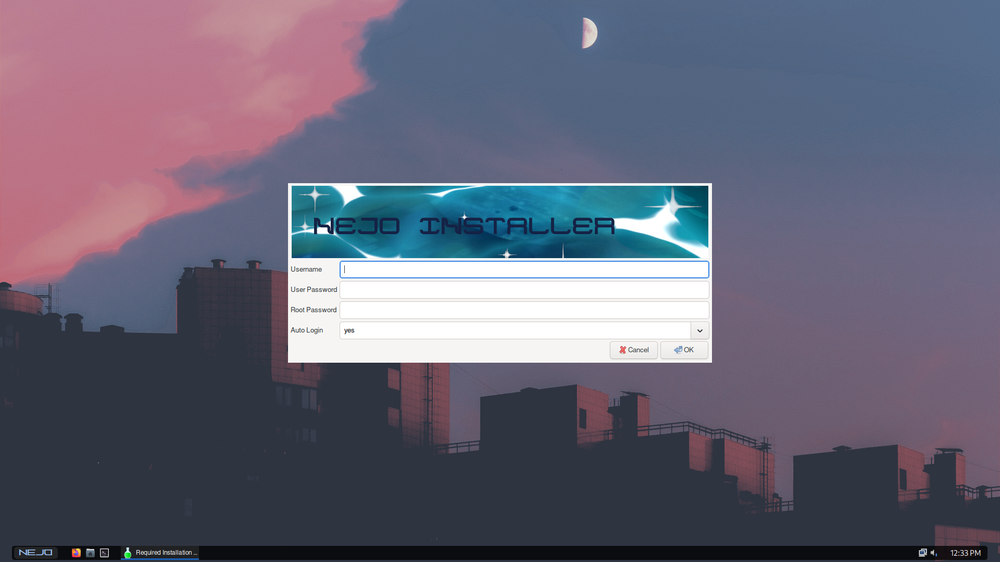
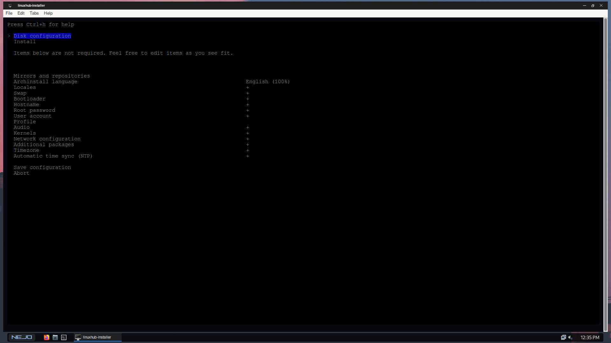
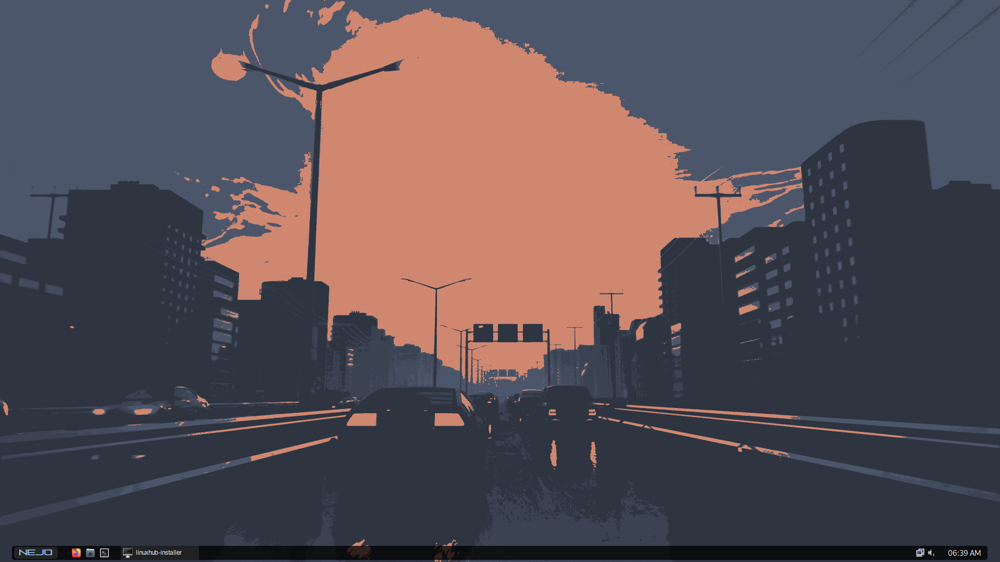

A minimal, blazing-fast Linux OS built for developers and pentesters.
Considering the rapid growth in Tanzania's technology, we thought it'd be better to have
a distribution catered to meet our needs.
I think we can all come to a certain level of agreement that having control over our systems without betraying
performance has been and is always our goal. Our comfortability with the archiso allows us to build you a distro
that is unbloated and only comes with necessary items to get your system up and running.
We have included a post installation script that will allow you to pick between two careers,
1. Developer
2. Security
Available in openbox, kde and hyprland
Wanna join and become a contributor? Click here!
 






